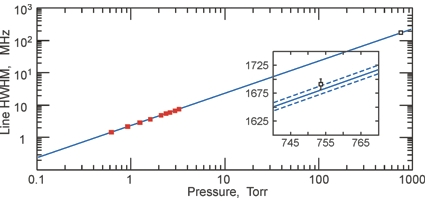
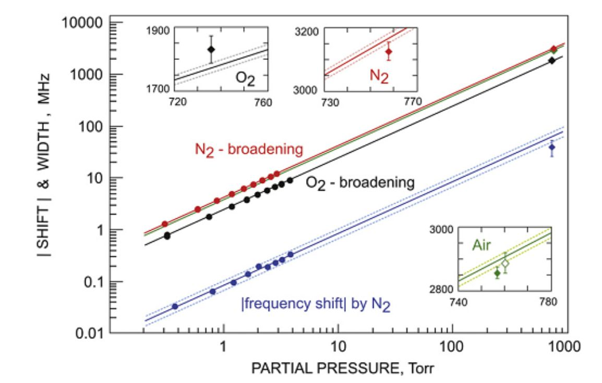
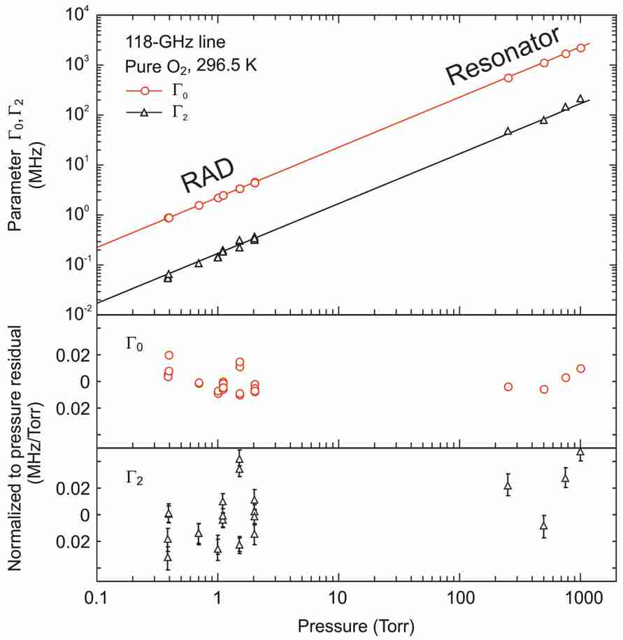
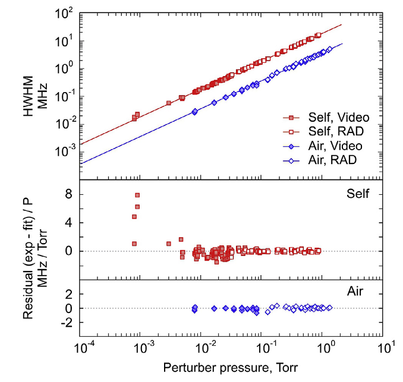

Instruments Resonator spectrometer Accuracy of measurements Resonator spectrometer Accuracy of measurements
Accuracy of measurements
For determination of possible systematic errors we performed a series of complementary experiments (Ref. 9 (2003), Ref. 9 (2005), Ref. 1 (2007), Ref. 1 (2013)) in which parameters of molecular spectral lines (in particular, pressure broadening and shifting) measured by the resonator spectrometer were revised by a spectrometer of another type, namely RAD spectrometer. Values of the parameters measured by the two spectrometers coincided within statistical uncertainty in all cases. As an example, we present in one figure results of the 118-GHz oxygen line self-pressure broadening studies by the RAD [Ref. 9 (2003)] and resonator spectrometers [Ref. 14 (2008)]. Filled squares correspond to the line width experimentally measured by the RAD spectrometer. The same data were used in Fig. 3 of [Ref. 9 (2003)] where statistical uncertainties of these points can be found. The measurement by the resonator spectrometer is shown by a blank square. The solid line is the result of linear regression of the RAD spectrometer points. Dashed lines show the statistical uncertainty of the regression. Deviation of the resonator’s point from the line can be seen in the insertion in the figure. It’s really astonishing that the 300× extrapolation of the low-pressure measurement falls in such close vicinity to the resonator’s result obtained at atmospheric pressure. Such verification confirms that systematic errors are minimized in both spectrometers. 
The next figure present results of similar measurements for the 380-GHz water line broadening and shifting parameters by pressure of major atmospheric gases Ref. 1 (2013).

Similar example demonstrating measurements of the speed dependence of the collisional cross-section parameter of the 118-GHz oxygen line Ref. 1 (2017).

Similar example demonstrating complimentary measurements of the 22-GHz water vapor line collisional broadening using our Video and RAD spectrometers Ref. 1 (2018).

|